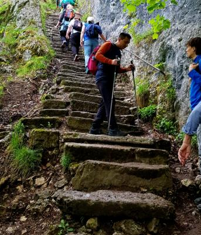
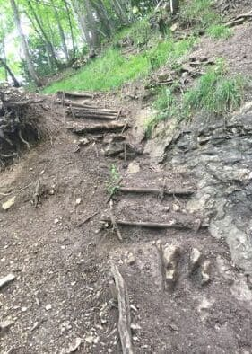
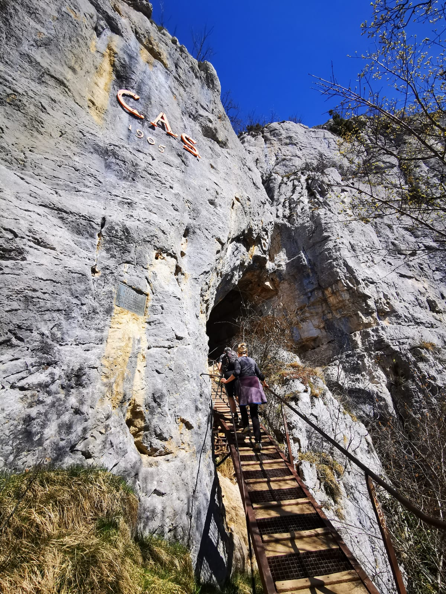
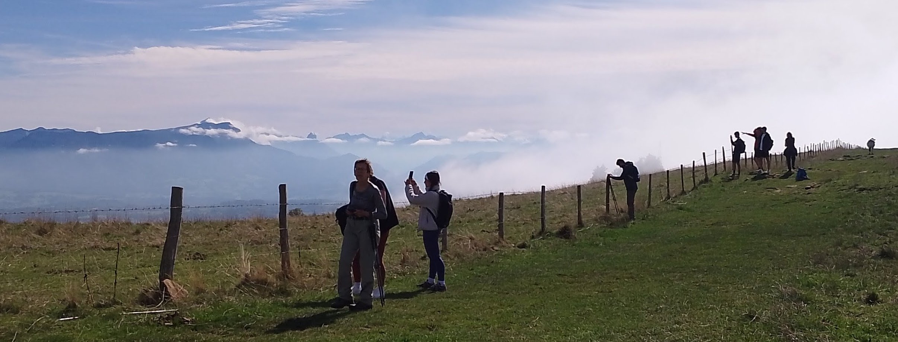

Il y a une multitude de sentiers pour randonner au Salève. L'AGAS ne propose que les chemins officiels (balisés) ne pas dépassant le niveau T2 selon les cotations du Club Alpin Suisse. Pour la montée depuis Veyrier, l'AGAS propose essentiellement 3 sentiers:



Pour le retour à pied comptez environ un tiers de temps en moins que pour la montée. Si vous êtes fatigués, vous pouvez descendre en téléphérique. Et ceux qui n'ont pas besoin de retourner à Veyrier continuent souvent par la crête pour descendre à Croix-de-Rozon (bus 82 et 44 vers Genève). Nous sommes normalement en bas entre 16h et 17h.

Vues depuis la crête (une heure de traversée, facile)
Suivant la demande, la météo, le niveau des marcheurs et la disponibilité des bénévoles, nous proposons d'autres itinéraires depuis Veyrier, ou même un deuxième rendez-vous à un autre point de départ pour explorer les chemins au sud de la Croisette. Un dessin des chemins que nous avons parcourus en 2025 se trouve à la fin de notre rapport annuel.
Si vous désirez faire des randonnées ailleurs qu'au Salève, nous vous recommandons: